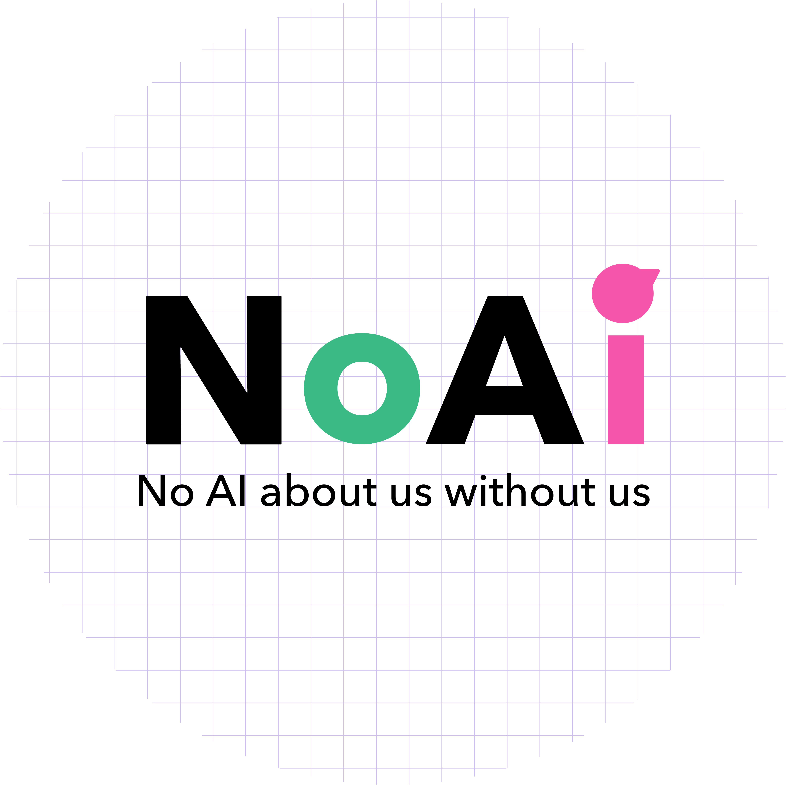

🌟 Welcome to Our Home Page 🌟
We are dedicated to creating inclusive and innovative solutions for transportation and mobility systems, ensuring accessibility and safety for everyone. Explore our latest updates, projects, and progress here. 🤩
News
-
Featured on Vetenskapsradion Sveriges Radio P1 - Improving Traffic Safety for People with Disabilities
Our research was recently featured on Vetenskapsradion Sveriges Radio P1. During the interview, we discussed our mission to create safer and more inclusive traffic environments for individuals with disabilities.
-
Featured on Sveriges Radio P4 Göteborg
We are delighted to have been featured on Sveriges Radio P4 Göteborg, where our innovative project aimed at enhancing traffic safety for individuals with disabilities was highlighted. Our initiative involves an AI-equipped vehicle that films and analyzes the movement patterns of pedestrians, with a particular focus on participents with mobility challenges. By collaborating closely with these individuals, we aim to develop a system that not only improves their safety but also contributes to a more inclusive traffic environment.
-
Join SAFER’s portfolio
We are now part of SAFER’s project portfolio! ✨
-
Data collection started today
Intervjuarbetet påbörjat idag 14/6
subscribe via RSS